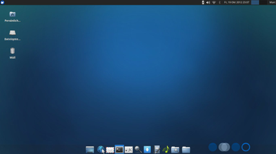

Xfce Desktop
Dieser Artikel wurde für die folgenden Ubuntu-Versionen getestet:
Ubuntu 14.04 Trusty Tahr
Zum Verständnis dieses Artikels sind folgende Seiten hilfreich:
 Zur Verwaltung der grafischen Oberfläche von Xfce und zur Anzeige des Kontextmenüs dient das Programm xfdesktop. Es wird beim Start von Xfce automatisch geladen und bietet zahlreiche Funktionen:
Zur Verwaltung der grafischen Oberfläche von Xfce und zur Anzeige des Kontextmenüs dient das Programm xfdesktop. Es wird beim Start von Xfce automatisch geladen und bietet zahlreiche Funktionen:
Setzen eines Hintergrundbilds
Färben des Hintergrundes mit 3 verschiedenen Übergangsmöglichkeiten
Einstellung der Helligkeit und der Sättigung
Anzeigemöglichkeit von Symbolen und Dateien auf dem Desktop
Anzeigemöglichkeit des Programmmenüs (rechte Maustaste)
Anzeigemöglichkeit der Arbeitsflächen (mittlere Maustaste)
Anzeigemöglichkeit minimierter Anwendungen als Symbol
Entsprechende Einstellungsmöglichkeiten findet man im Einstellungsmanager unter dem Abschnitt "Schreibtisch".
|  |
| Xubuntu-Desktop |
Desktop-Symbole¶
Unter "Schreibtisch -> Symbole -> Standardsymbole" im Einstellungsmanager kann man die Anzeige eines Symbols für
das Persönliches Verzeichnis (Homeverzeichnis)
das Dateisystem
den Papierkorb
Entfernbare Datenträger (Wechseldatenträger)
ein- oder ausschalten. Symbol- und Schriftgrößen sind hier ebenfalls änderbar.
Ändern der Standardbezeichnungen¶
Ein Umbenennen der Desktop-Symbole ist nicht möglich. Um beispielsweise die Bezeichnung "Persönlicher Ordner" zu ändern, ist ein Umweg erforderlich. Zuerst deaktiviert man die Anzeige des Symbols. Dann legt man sich eine neue Datei home.desktop [3] mit folgendem Inhalt an:
[Desktop Entry] Type=Application Name=Persönlich Comment=Eigene Dateien Categories=Application; Exec=thunar Icon=folder_home Terminal=false StartupNotify=false
Der Vorteil dieses Umwegs ist, dass man neben dem Namen auch das Symbol (Icon=...) frei wählen kann. Für ein eigenes Desktopsymbol "Dateisystem" lautet der Befehl Exec=thunar /, für den Papierkorb entsprechend Exec=thunar trash:/ (siehe auch Desktop-Symbole).
Die neu erstellte Datei muss jetzt noch in den passenden Ordner verschoben werden (siehe nächster Abschnitt).
Zusätzliche Programmstarter¶
Eigene Dateien können entweder mit der Maus auf den Desktop gelegt werden oder man hinterlegt diese im Ordner ~/Schreibtisch/ oder ~/Arbeitsfläche/ im Homeverzeichnis. Um weitere Programmstarter auf den Desktop zu setzen, verfährt man prinzipiell genauso. Die Erstellung eigener .desktop- Dateien wird im Artikel Programmstarter ausführlich beschreiben.
Aussehen und Verhalten der Symbole¶
Das Verhalten der Symbole, wenn diese z.B. mit der Maus selektiert oder ausgeführt werden, wird in der Datei ~/.gtkrc-2.0 festgelegt. Ist diese Datei noch nicht vorhanden, muss sie angelegt werden.
Ein einfaches, recht praktikables Beispiel:
style "xfdesktop-icon-view" {
XfdesktopIconView::label-alpha = 0
base[NORMAL] = "#23498e"
base[SELECTED] = "#808080"
base[ACTIVE] = "#808080"
fg[NORMAL] = "#ffffff"
fg[SELECTED] = "#ffffff"
fg[ACTIVE] = "#ffffff"
}
widget_class "*XfdesktopIconView*" style "xfdesktop-icon-view"
label-alphasetzt den Transparentwert für den Hintergrund des Symboltextes. Es sind Werte zwischen0(volle Transparenz) und255(undurchsichtig) möglich. In diesem Beispiel ist der Hintergrund transparent.Die nächsten 3 Zeilen
basebeschreiben die Farbwerte des Texthintergrunds:
des Texthintergrunds:NORMALsetzt die Farbe für den Regulär, nicht selektierten Status.SELECTEDsetzt die Farbe, wenn das Icon selektiert ist und der Desktop sich mit der Tastatur und Maus im Focus befindet.ACTIVsetzt die Farbe, wenn das Icon selektiert ist, aber der Desktop sich mit der Tastatur und Maus nicht im Focus befindet.
Die letzten 3 Einträge
fgbeschreiben die Farbwerte der Symbolbeschriftung, in diesem Falle weiß.
Ein weiteres, etwas bunteres Beispiel:
style "xfdesktop-icon-view" {
XfdesktopIconView::label-alpha = 75
XfdesktopIconView::ellipsize-icon-labels = 0
base[NORMAL] = "#00ff00"
base[SELECTED] = "#5050ff"
base[ACTIVE] = "#0000ff"
fg[NORMAL] = "#ff0000"
fg[SELECTED] = "#ff0000"
fg[ACTIVE] = "#ff0000"
}
widget_class "*XfdesktopIconView*" style "xfdesktop-icon-view"
Hier sorgt
ellipsize-icon-labels = 0dafür, dass lange Dateinamen in die nächste Zeile umgebrochen werden.
Ein relativ komplexes Beispiel wäre:
style "xfdesktop-icon-view" {
font_name="LucidaMacBold"
XfdesktopIconView::ellipsize-icon-labels = 0
XfdesktopIconView::shadow-x-offset = 1
XfdesktopIconView::shadow-y-offset = 1
XfdesktopIconView::selected-shadow-x-offset = 0
XfdesktopIconView::selected-shadow-y-offset = 0
XfdesktopIconView::shadow-color = "#080808"
XfdesktopIconView::selected-shadow-color = "#000000"
XfdesktopIconVIew::cell-spacing = 5
# spacing between each 'cell' in the grid of icons
XfdesktopIconView::cell-padding = 0
# sets extra padding placed around each icon+text
XfdesktopIconView::cell-text-width-proportion = 2.8
# the units are in width (so for 30px icons, '2.5' would leave a 75px wide area underneath for the text)
}
widget_class "*XfdesktopIconView*" style "xfdesktop-icon-view"
widget "*XfdesktopIconView*" style "xfdesktop-icon-view"
class "*XfdesktopIconView*" style "xfdesktop-icon-view"Empfohlen wird, nicht alle Einstellungen auf einmal zu übernehmen, sondern alle Zeilen bis auf eine mit dem Zeichen # am Zeilenanfang zu deaktivieren ("auszukommentieren") und weitere Einstellungen erst nach und nach durch Entfernen des #-Zeichens zu aktivieren.
| Übersicht der Einstellungsoptionen (Aussehen & Verhalten der Symbole) | ||
| Eintrag (Beispiel) | Bedeutung | Mögliche Werte |
XfdesktopIconView::tooltip-size = 128 | Größe der Bildvorschau beim Darüberfahren mit der Maus | 0 (unsichtbar) bis 512 (groß); Hinweis: bei Werten über 256 schwächere Vorschauqualität |
XfdesktopIconView::label-alpha = 75 | Transparenz des Beschriftungshintergrunds | 0 (volle Transparenz) bis 255 (undurchsichtig) |
XfdesktopIconView::ellipsize-icon-labels = 0 | Zeilenumbruch für lange Dateinamen aktivieren (mehrzeilige Darstellung) | Zeilenumbruch ein: 0; Zeilenumbruch aus: 1 |
base[NORMAL] = "#00ff00" | Setzt Farbe für Hintergrund (normaler Status) | Farbwerte zwischen #000000 und #ffffff |
base[SELECTED] = "#5050ff" | Setzt Farbe für Hintergrund (Icon ausgewählt, Desktop im Fokus) | Farbwerte zwischen #000000 und #ffffff |
base[ACTIVE] = "#0000ff" | Setzt Farbe für Hintergrund (Icon ausgewählt, Desktop nicht im Fokus) | Farbwerte zwischen #000000 und #ffffff |
fg[NORMAL] = "#ff0000" | Setzt Farbe für Iconbeschriftung (normaler Status) | Farbwerte zwischen #000000 und #ffffff |
fg[SELECTED] = "#ff0000" | Setzt Farbe für Iconbeschriftung (Icon ausgewählt, Desktop im Fokus) | Farbwerte zwischen #000000 und #ffffff |
fg[ACTIVE] = "#ff0000" | Setzt Farbe für Iconbeschriftung (Icon ausgewählt, Desktop nicht im Fokus) | Farbwerte zwischen #000000 und #ffffff |
XfdesktopIconView::shadow-x-offset = 1 | Schattenversatz x-Achse (normal) | in Pixeln |
XfdesktopIconView::shadow-y-offset = 1 | Schattenversatz y-Achse (normal) | in Pixeln |
XfdesktopIconView::selected-shadow-x-offset = 0 | Schattenversatz x-Achse (ausgewählter Status) | in Pixeln |
XfdesktopIconView::selected-shadow-y-offset = 0 | Schattenversatz y-Achse (ausgewählter Status) | in Pixeln |
XfdesktopIconView::shadow-color = "#080808" | Schattenfarbe (normal) | Farbwerte zwischen #000000 und #ffffff |
XfdesktopIconView::selected-shadow-color = "#000000" | Schattenfarbe (ausgewählter Status) | Farbwerte zwischen #000000 und #ffffff |
XfdesktopIconView::cell-spacing = 5 | Zwischenraum zwischen Icon-Zellen des Gitters | in Pixeln |
XfdesktopIconView::cell-padding = 5 | Setzt eine extra Füllung um jedes Icon + Text | in Pixeln |
XfdesktopIconView::cell-text-width-proportion = 2.5 | Breite des Textfeldes unter dem Icon relativ zum Icon | Beispiel: 2.5 bei 30px-Icon ergibt ein Textfeld mit 75px. Wenn z.B. die Gittergröße reduziert werden soll, ist diese Variable die wichtigste (Vorschlag: reduzieren auf 1.8) |
Tool-Tipps¶
Will man die Tooltips abschalten, so fügt man in die ~/.gtkrc-2.0 folgende Zeile ein:
gtk-enable-tooltips = 0
Symbol-Text¶
In der Standardeinstellung endet der angezeigte Text unter den Symbolen schon nach wenigen Zeichen. Um lange Bezeichnungen für Dateinamen bzw. Starter komplett darzustellen, dient der Eintrag:
XfdesktopIconView::ellipsize-icon-labels = 0
Auf diese Weise werden lange Namen in die nächste(n) Zeilen(n) umgebrochen.
Änderungen übernehmen¶
Um die Änderungen optisch in einer laufenden Sitzung verfolgen zu können, muss man sich entweder ab- und wieder neu anmelden oder man wählt einmal ein anderes Oberflächendesign unter Erscheinungsbild an und wechselt direkt zurück auf das gewünschte, damit die Änderungen am GTK-Thema neu eingelesen werden. Zusätzlich musst dann Xfdesktop auch neu gestartet werden. Dazu verwendet man folgenden Befehl in einem Terminal-Fenster [2]:
xfdesktop -R
Hintergrundbilder¶
Als netten Nebeneffekt bietet der Xfdesktop auch eine Überlagerungsmöglichkeit von Farbverläufen und Bildern. Möglich wird dieser Effekt durch halbtransparente Bilddateien. Als Beispiel dienen folgende Einstellungen im Bereich Schreibtisch des Einstellungsmanagers:
Farbstil: Vertikaler Verlauf
Erste Farbe:
#281515Zweite Farbe:
#B66E37
[x] Zeige Bild
Anzeige: Automatisch
Nun klickt man auf "Liste bearbeiten" und fügt das Bild /usr/share/xfce4/backdrops/xfce-in-a-grid.png ein und speichert ab. Ab Xfce 4.10 bzw. Ubuntu 12.10 kann externen Monitoren ein eigenes Hintergrundbild zugewiesen werden.
Problembehebung¶
Sollten Desktop-Symbole im laufenden Betrieb verschwinden oder andere Fehler beim Anzeigen des Desktops auftreten, kann das Erstellen der Datei ~/.gtkrc-2.0, ein Neustarten des Desktops und eine Neuanmeldung helfen.
 Übersichtsartikel
Übersichtsartikel- Erstellt mit Inyoka
-
 2004 – 2017 ubuntuusers.de • Einige Rechte vorbehalten
2004 – 2017 ubuntuusers.de • Einige Rechte vorbehalten
Lizenz • Kontakt • Datenschutz • Impressum • Serverstatus -
Serverhousing gespendet von